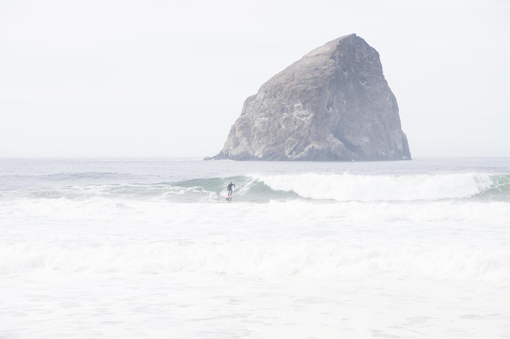
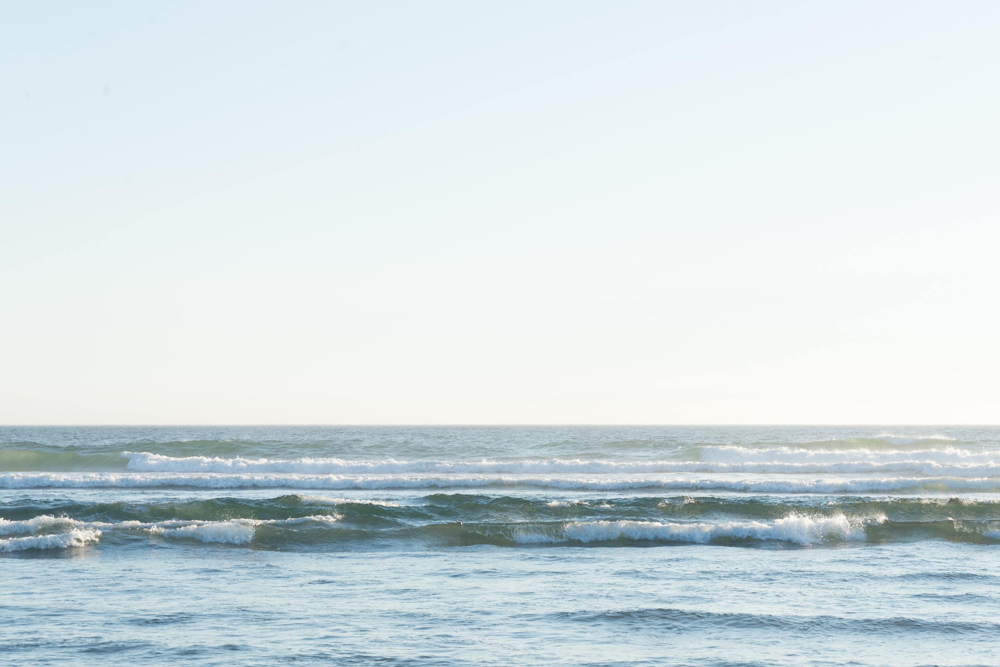
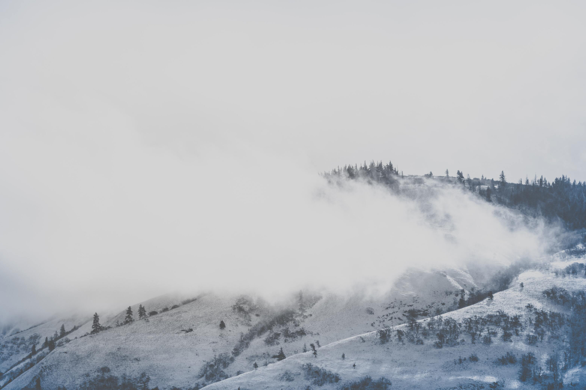
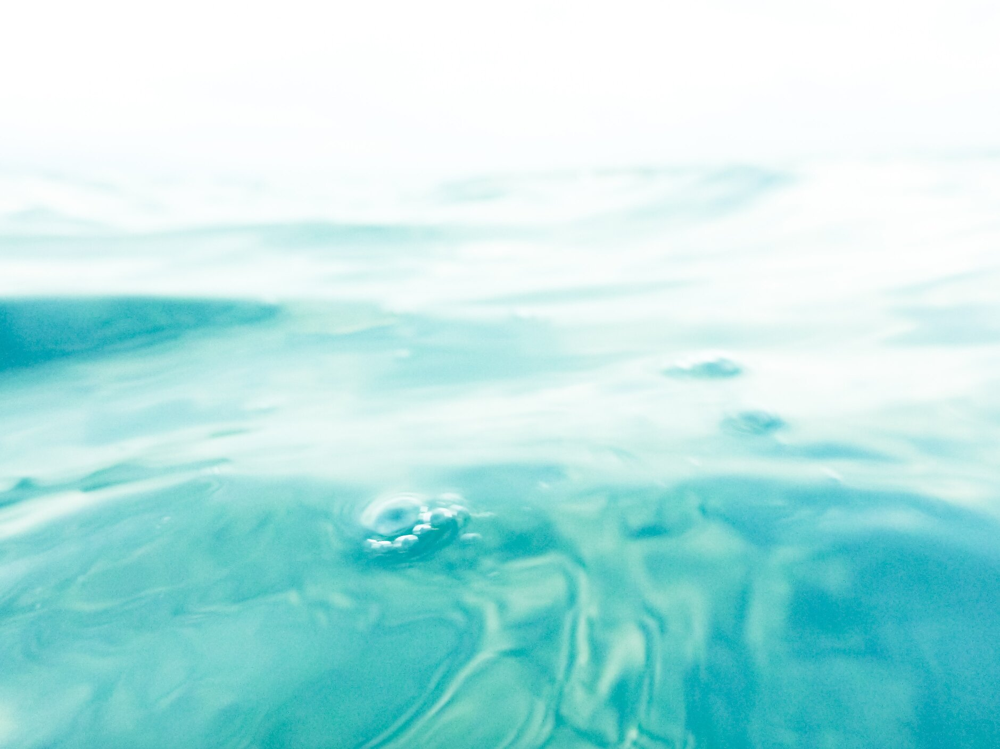

Experience
DMS – Senior Product Designer & Software Engineer, 2019 – Present. Hood River, Oregon.
Create digital and software projects for a variety of fintech clients.
kristimartin.com Contract Senior & Lead Product Designer. 2013 – 2019. Hood River, Oregon.
Designed & launched products for clients such as Intel, Nike, Deutsch Inc., U.S. Skiing Team, U.S. Snowboarding Team, Hudl.
Nike – Senior Product Designer, 2017 – 2019. Beaverton, Oregon.
Designed & shipped Assort Visual, a web-based merchandising software tool, from initial ideas through post-release user testing.
Deutsch – Contract Senior UX Designer, 2016. Los Angeles, California.
Designed client websites for VW & Anthem.
Intel – Contract Senior UX/UI Designer, 2015. Hillsboro, Oregon.
Created the design & user experience for a software product within an Intel Startup Incubator.
Icebreaker – UX Designer, 2011 – 2012. Portland, Oregon & Wellington, New Zealand.
Improved conversion of global ecommerce site through design & user experience efforts.
Altrec – UX Designer, 2007 – 2011. Bend, Oregon.
Improved conversion of global ecommerce site through design & user experience efforts.
Photography
I also love to take photos. Here are a few of my favorite images that are available for free on Unsplash.com
   